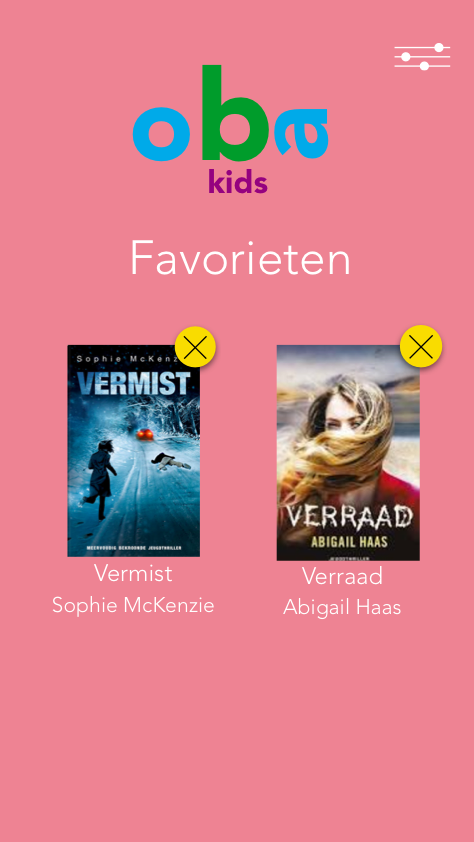
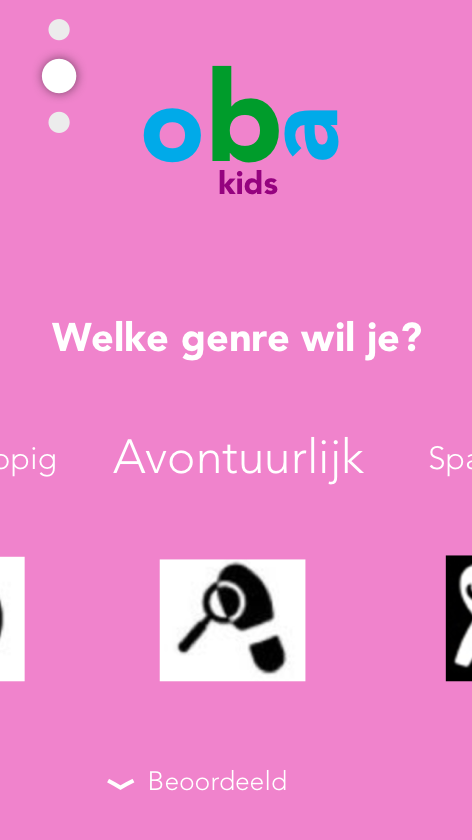
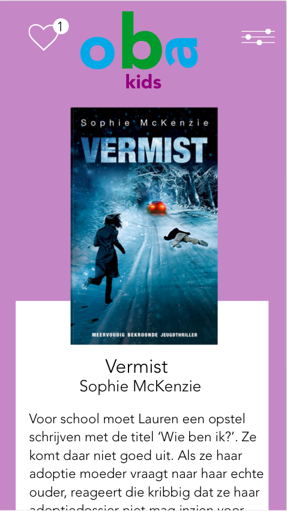
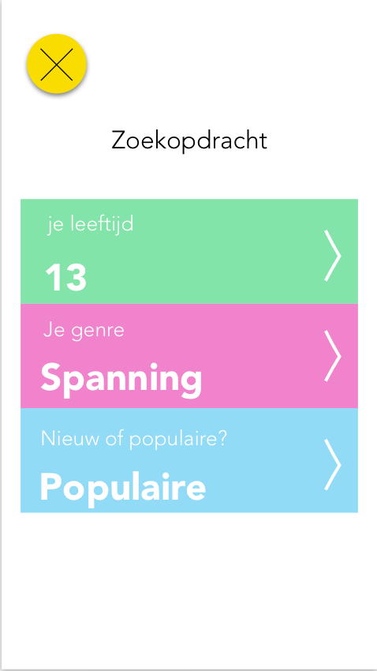
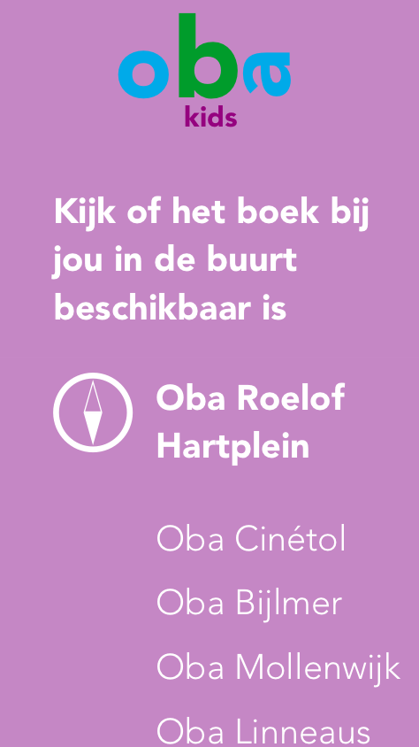

Oba boek een boek
Vak: Visual Interface Design
De Look, Feel en Touch van een gebruiksvriendelijke, communicatieve en betekenisvolle interactieve media toepassing ontwerpen.
Opdracht: Ontwerp de user interface voor het zoeken en reserveren van een boek bij de Openbare Bibliotheek Amsterdam.
Wat heb ik geleerd: UI schetsen, Sensory Design, interactie vormgeven en Sketch en Principle
Ik heb gekozen om het design zo simpel mogelijk te houden en het een soort tinder voor boeken te maken. Hierdoor kunnen kinderen het ook makkelijk gebruiken. Er zijn veel verschillende kleuren gebruikt. Dit kan je terug vinden in het Oba Kids kaart. Het ontwerpdocument is verstuurbaar via de mail en kan ingekeken worden tijdens een gesprek.
Klant: Openbare Bibliotheek Amsterdam




